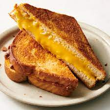

Best Grilled Cheese Recipe

There are few things in this world that i enjoy more than a grilled cheeese sandwich.
This is a simple recipe that requires little to no culinary skill and will be a keeper
in your recipe book. Pair with a nice tomatoo bisque for a real treat!
Ingredients
- 4 slices American Cheese
- 2 tablespoons salted butter
- 2 slices country white bread
- Optional - Tomato, Bacon, Jalepeno, etc.
Instructions
- Heat non-stick pan on stove top to medium heat
- Add 1 tbsp salted butter to pan and let melt
- Place 2 slices of bread into pan and let come to a golden brown crisp
- Once golden brown, add 1/2 tbsp to each top side of bread and flip to put butter side face down on pan
- Add 2 slices of cheese to each piece of bread. Cover and leave for 2-3 minutes
- Next, add tomato, bacon, jalepeno or whatever else you want onto one piece of bread
- Flip the piece of bread with just cheese on it onto the piece with everything else on it and flatten down with spachler
- Flip Every 30 seconds until cheese is completely melted and bread is of desired toastiness